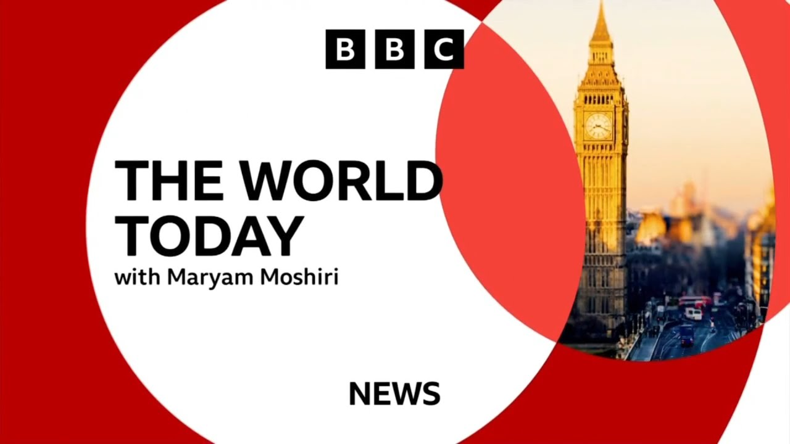

【BBC World Today 20250722 以色列拒绝西方结束加沙战争的呼吁｜孟加拉国军机坠毁在首都达卡一所学校，造成至少19人死亡｜网络攻击威胁激增】
Summary: The BBC's "The World Today" covers Israel's rejection of Western calls to end the Gaza war, a deadly Bangladesh jet crash, and global humanitarian crises, alongside UK water industry reforms and cyberattack threats.
摘要： BBC《今日世界》报道以色列拒绝西方结束加沙战争的呼吁、孟加拉国军机坠毁致死的悲剧及全球人道主义危机，同时关注英国水务行业改革和网络攻击威胁。

⏱️ Estimated Reading Time: 39 min.
📚 四级生词 📚 六级生词 📚 雅思生词 📚 托福生词 📚 专八生词 📚 SAT生词 📚 考研生词 📚 GRE生词 📚 高考生词 📚 其它生词
It's 7pm in London.
现在是伦敦时间晚上7点。
This is the world today with Maryam Machiri.
这里是玛丽安·马奇里为您带来的《今日世界》。
Israel rejects a joint call from Western powers to end the war in Gaza.
以色列拒绝西方国家联合呼吁结束加沙战争。
Britain's foreign secretary has just addressed Parliament.
英国外交大臣刚刚在议会发表讲话。
Today I join a statement of 31 foreign ministers as signatures with a simple urgent message the war in Gaza must end now.
今天我与其他30国外长联合签署声明，传递一个简单而紧迫的信息：加沙战争必须立即结束。
It comes as Israel attacks one of the few areas in the territory left relatively unscathed and packed with displaced garsans.
此前以色列袭击了加沙地带少数相对完好且挤满流离失所者的区域之一。
At least 19 people are killed after a Bangladesh Air Force training jet crashes into a school in the capital Dhaka.
孟加拉国空军一架训练机坠毁在首都达卡一所学校，造成至少19人死亡。
Also coming up on the world today.
今日节目还将关注。
He prepared for new badges, girl guiding adds new challenges for girls lucky enough to be part of the game.
他为新徽章做准备，女童军为有幸参与活动的女孩们增设新挑战。
There are more than 50,000 girls and young women on a waiting list all wanting to join and of course girl guiding want that number to go down.
超过5万名女孩和年轻女性在等候名单上渴望加入，而女童军组织自然希望减少这一数字。
Hello and welcome to the world today on BBC News.
大家好，欢迎收看BBC新闻《今日世界》。
25 Western powers are calling on the Israeli government to end the war in Gaza and find a better way to deliver urgent food aid to desperate Palestinians.
25个西方国家呼吁以色列政府结束加沙战争，并找到更有效方式向绝望的巴勒斯坦人提供紧急粮食援助。
Israel though has rejected the statement saying it's disconnected from reality.
但以色列拒绝该声明，称其脱离现实。
Among the signatories of Britain, France, Italy, Spain and the Netherlands, all of them condemning the US and Israeli backed a distributor, the Gaza Humanitarian Foundation and the system of food delivery which they say is dangerous, fuels instability and deprives garsans of human dignity.
签署国包括英国、法国、意大利、西班牙和荷兰，均谴责美以支持的"加沙人道基金会"及其粮食分发系统，称其危险、加剧不稳定并剥夺加沙人尊严。
Well it says we are prepared to take further action, says the statement, to support an immediate ceasefire and a political pathway to security and to peace.
声明称"我们准备采取进一步行动支持立即停火，推动通往安全与和平的政治进程"。
For in the past hour, Foreign Secretary David Lamy also announced an extra £40 million worth of humanitarian assistance for Gaza this year.
过去一小时内，外交大臣戴维·拉米还宣布今年额外提供4000万英镑加沙人道援助。
He also condemned the killings of civilians and said Israel must answer what justifies killing desperate starving children.
他谴责杀害平民行为，并要求以色列解释杀害饥饿绝望儿童的正当理由。
Have a listen.
请听报道。
There are near daily reports of Israeli troops opening fire on people to access food.
几乎每日都有以军向领取食物人群开火的报道。
Israeli jets have hit women and children waiting for a health clinic to open and Israeli drone has struck down children filling water containers which is rarely official of blame on a technical error.
以军战机袭击候诊的妇孺，无人机炸毁接水儿童，官方罕见归咎于技术错误。
Hamas is of course contributing to the chaos and taking advantage of it but I utterly condemn the killing of civilians seeking to meet their basic needs.
哈马斯确实加剧混乱并从中获利，但我绝对谴责杀害寻求基本生存物资的平民。
Well the statement by the Western powers comes as the humanitarian situation in Gaza has reached breaking point.
西方发表声明之际，加沙人道主义局势已达临界点。
Last week the UN said almost 900 people have been killed while trying to get food in Gaza, almost three quarters of them in the vicinity of those GHF sites.
上周联合国称加沙近900人因获取食物丧生，其中四分之三死于加沙人道基金会站点附近。
Well famine is also taking hold in Gaza, at least 19 people have died of starvation in Gaza in the past 24 hours alone according to health officials there.
饥荒正在加沙蔓延，当地卫生官员称过去24小时至少有19人饿死。
Well the GHF spokesman Chaplin Faye admits there is a problem but he blames the UN.
加沙人道基金会发言人查普林·费伊承认存在问题，但归咎于联合国。
But GHF was never meant to meet the needs of the population alone.
但加沙人道基金会从未承诺单独满足民众需求。
It is not enough.
这远远不够。
That is why we have routinely and from the beginning pushed for the UN and others to operate alongside us in Gaza.
因此我们始终敦促联合国等组织与我们在加沙协同行动。
There have been many many false reports that the UN is not allowed to operate in Gaza that GHF has replaced them that four GHF sites have replaced 400 UN access points.
大量不实报道称联合国被禁止在加沙行动，称我们4个站点取代了联合国400个接入点。
That is just not true.
这绝非事实。
The world food program themselves acknowledge there are no restrictions on the aid they can bring in.
世界粮食计划署承认其援助物资入境未受限制。
They and others have tens of thousands of pallets of aid sitting inside Gaza, rotting just out of reach of those who need it.
他们与其他机构数万板援助物资滞留加沙，在急需者眼前腐烂。
You don't see this on the news.
新闻从未报道这些。
The media isn't reporting it.
媒体只字不提。
So many who hear this think it can't be true.
听闻者多认为这不可能。
I understand this directly myself.
我本人深有体会。
It seems so implausible to me.
这令我难以置信。
That humanitarian will let food rot when people are starving.
人道主义者竟在民众挨饿时任由食物腐烂。
Well the UN has rejected that appeal for help by the group chosen by Israel to deliver aid because it uses armed guards and is clearly linked to Israel.
联合国拒绝以色列指定援助组织的协助请求，因该组织使用武装警卫且与以方关系密切。
The UN says its own attempts to deliver supplies to Gaza are repeatedly blocked.
联合国称其向加沙运送物资的尝试屡遭阻挠。
Well let's cross live now and speak to our correspondent in Westminster Helen Cat Helen.
现在连线我们在威斯敏斯特的记者海伦·卡特。
Let's go back to that foreign secretary statement earlier on in Parliament.
回顾外交大臣早前在议会的声明。
Strong words there from David Lamy and also the UK part of this group of signatories condemning some of the actions of Israel in Gaza.
戴维·拉米措辞强硬，英国作为签署国之一谴责以色列在加沙的部分行动。
It was yes and that was something that the foreign secretary referenced when he was speaking in Parliament.
是的，外交大臣在议会讲话时提及此事。
He appeared to find out actually while he was at the dispatch box giving his speech one of his back benches.
他实际上是在演讲时从后座议员处得知。
Emily Thornbury mentioned that Israel had not accepted this and that's appeared to be him hearing about that and being quite disappointed that it happened so quickly.
艾米丽·索恩伯里指出以色列未接受声明，他似乎刚得知此事并对快速拒绝感到失望。
But a lot of what he said in the comments did echo what we've heard in that joint statement.
但他的许多言论与联合声明内容一致。
He talked about the current aid system being inhumane, dangerous and said it deprives garsons of dignity.
他称当前援助体系不人道、危险，剥夺加沙人尊严。
He also criticized what he said was that the fact that Palestinians have been moved out of 86% of Gaza saying there were now two million people trapped in an area of just over 20 square miles.
他批评巴勒斯坦人已被迫撤离加沙86%区域，称200万人现被困于20余平方英里的狭小地带。
You heard him there in the clip that you played saying that he utterly condemned the killing of civilians who were seeking aid.
各位听到他在片段中强烈谴责杀害寻求援助的平民。
He also said that Israel's actions were doing untold damage to Israel's standing in the world.
他还称以色列的行为正对其国际声誉造成难以估量的损害。
So there was quite a lot of a very strong language.
因此措辞相当强硬。
He's mentioned again that the UK, as you said, would be giving an extra 40 million pounds of humanitarian assistance this year.
他重申英国今年将追加4000万英镑人道援助。
Now some of these sentiments were echoed by others around the commons.
下议院其他议员也呼应了部分观点。
The Shadow Foreign Secretary, British Patel from the Conservatives also said she utterly condemned these attacks.
保守党影子外交大臣布里奇特·帕特尔同样强烈谴责这些袭击。
But she said that words were not saving lives and she was among a number of MPs who were questioning whether the UK government could be doing more in practical terms to try and bring about this ceasefire.
但她指出言辞无法挽救生命，并与其他议员质疑英国政府能否采取更多实际行动促成停火。
Okay, Helen, thank you very much, Indy, for that Helen cat there in Westminster.
好的，感谢威斯敏斯特的海伦·卡特。
Meanwhile, Israel's military offensive in Gaza continues.
与此同时，以色列在加沙的军事行动持续。
It's launched a new ground and aerosol on the city of Albala in central Gaza, which until now had largely been spared from the intense bombardment we've seen in other parts of the strip.
以军对加沙中部阿尔巴拉市发动新地面与空袭，该地区此前基本未遭加沙其他区域般的猛烈轰炸。
Across the city, we have had reports of tanks and military vehicles advancing into built-up areas under air cover and shelling from heavy artillery.
全市范围报告显示，坦克与军车在空军掩护和重炮轰击下向建筑区推进。
Well, the IDF had warned people of the impending assault.
以色列国防军曾警告民众即将到来的进攻。
Copies of this leaflet were dropped from the sky over the weekend.
周末传单从空中撒下。
People were told to head south towards Al-Mawasi.
民众被告知向南前往阿尔马瓦西。
The area is packed, though, with thousands of displaced people from southern Gaza.
但该地区已挤满数千名来自加沙南部的流离失所者。
There are next to no safe options left in Gaza.
加沙几乎已无安全之地。
Well, it's believed some of the hostages still being held in Gaza are actually in dear Albala.
据信部分仍被扣押的人质实际就在阿尔巴拉。
Udi Goran is the cousin of Tal Haimi, who's among the hostages who were killed.
乌迪·戈兰是被害人质之一塔尔·海米的表亲。
He gave this response to the statement by the UK and those other signatories.
他对英国等签署国的声明作出如下回应。
I am the cousin of a hostage and I want to see him back home and you know these large-scale diplomatic efforts.
作为人质亲属，我渴望亲人回家，这些大规模外交努力...
I wish I could say something intelligent, but at the end of the day, if all of these countries pull together and what's on the line here is not tariffs, it's not money, it's human lives, it's people suffering, it's it's a catastrophe on both sides of the border.
虽想发表睿智言论，但归根结底，若各国齐心协力——这关乎的不是关税金钱，而是鲜活生命与民众苦难，是边境两侧的灾难。
Why are they still waiting?
为何仍在观望？
Why are they still hesitating?
为何仍犹豫不决？
The face of the Israeli hostages and the gauzean civilians is linked together.
以色列人质与加沙平民的命运紧密相连。
And once the war ends, it brings alleviation to both sides.
战争结束方能缓解双方苦难。
And this is the only effort that everybody should drive for.
这才是所有人应努力的方向。
Well, Dr. Julie Norman is an associate professor in politics and international relations at the University College London.
伦敦大学学院政治与国际关系副教授朱莉·诺曼博士表示：
This was a very direct statement, very forceful as far as statements go.
这是一份非常直白、强有力的声明。
It was very strongly worded, very clearly saying this war must end, very critical of the current humanitarian aid devastation largely driven by the GHF, the U.S. and Israeli that operation there right now, and very much calling for an end to the conflict more broadly, highlighting issues around settlements, around what's going on in the West Bank, and then these statements just now in the House of Commons very forcefully reiterating that.
措辞强硬，明确要求结束战争，严厉批评当前由美以支持的加沙人道基金会主导的人道主义灾难，更广泛呼吁结束冲突，强调定居点问题及约旦河西岸局势，下议院声明也强力重申这点。
With all that said, it's good as a statement goes.
尽管如此，作为声明已属上乘。
I think now what people here in the region are looking at is what comes after this?
我认为该地区民众现在关注的是后续行动。
Is this the culmination?
这是终点吗？
Is this statement the end?
声明就是结局？
Or is this the beginning of actually some some actions to back up these words that will actually result in some kind of change in policy and change on the ground?
抑或是用实际行动兑现承诺的开始，真正带来政策与实地变化？
And that I guess is the big question.
这才是关键问题。
What do you think?
您怎么看？
Well, I think there's some different options.
我认为存在多种可能。
I mean, we do know that France at least is leaning towards recognition of a Palestinian state, some of the wording in the statement, some of which imply that if things do not change that France and other states might might pursue that.
法国至少倾向于承认巴勒斯坦国，声明部分措辞暗示若局势无改观，法国等国可能推进此事。
Lamy, I think, you know, iterated some of the steps that the UK is taking.
拉米阐述了英国正采取的措施。
But at the end of the day, I think most of the states that sign on to this are aware that their leverage is still somewhat limited.
但归根结底，多数签署国明白自身影响力仍有限。
The U.S. obviously is not part of this statement.
美国显然未参与声明。
Very much back, Israel has already rejected this statement.
以色列已断然拒绝该声明。
So in terms of real change, I think they're realistic about the impact of these words, but at the same time felt it was better than silence and needed to be said nonetheless, and we'll see where they take it from here.
因此对于实际改变，签署国对这些言辞的影响持现实态度，但认为发声胜过沉默，后续行动值得关注。
Well, Rachel Cummings is the team leader for the Save the Children Charity in Gaza.
救助儿童会加沙团队负责人蕾切尔·卡明斯表示：
The situation is desperate in Gaza for children and their families.
加沙儿童及其家庭处境绝望。
You know, yesterday morning there was evacuation notices issued to southwest Balla about three kilometers from where we are here.
昨天早上距此三公里的巴拉西南部收到疏散通知。
And that impacted between 50 and 80,000 people who are now having to make a very difficult decision to relocate, to be displaced into Gaza where there is no land, there is no space and nowhere is safe.
5至8万人面临艰难抉择：重新流离至加沙无地无空间更无安全的区域。
So the situation is very, very challenging here.
因此当地局势极具挑战性。
And what about the situation in terms of aid and food we've heard today from the Gaza Humanitarian Foundation backed by Israel and the U.S.
对于以色列和美国支持的加沙人道基金会今日关于援助与粮食的言论，您怎么看？
They blamed the U.N. Are they right to do so?
他们归咎联合国，这合理吗？
I haven't heard that reference to the the U.N. but the situation for children in Gaza and the access of civilians to food is absolutely desperate.
我未听闻相关言论，但加沙儿童处境与平民获取食物的状况确实极其严峻。
There is no food in the markets the last three days.
过去三天市场已无粮食。
The markets have been empty.
市场空空如也。
I was in Kenya, Dirao Balla yesterday.
我昨天在肯尼亚的迪拉奥巴拉。
And the markets are empty.
市场一片空荡。
My team are sharing with me they have cash in their pockets, but there is no food to buy in their children are crying all day or night for hunger.
我的团队告诉我，他们口袋里有现金，但买不到食物，孩子们因饥饿日夜哭泣。
So yeah, the situation is terrible.
是的，情况很糟糕。
You know, we're seeing increased number of children in our clinics who are malnourished.
我们的诊所里营养不良的儿童数量正在增加。
Of course, we are we're seeing an increase in the number of pregnant women and breastfeeding women who are malnourished is very, very concerning.
当然，营养不良的孕妇和哺乳期妇女数量也在增加，这非常令人担忧。
What's the answer?
解决办法是什么？
The answer is a definitive ceasefire for Gaza.
答案是加沙必须立即停火。
We need peace.
我们需要和平。
We need humanitarian supplies to enter Gaza at scale.
我们需要大规模人道主义物资进入加沙。
We need access to children and their families populations in the most desperate situations.
我们需要接触最绝望处境中的儿童及其家庭。
And I need to be able to provide a degree of safety and security for my teams to be able to move around Gaza to be able to provide life-saving essential services and to children here.
我需要为团队提供一定程度的安全保障，以便在加沙行动，为这里的儿童提供救生基础服务。
Well, our chief international correspondent, Least Usek, gave her assessment on why she believes the UK and these other signatories have signed this letter today.
我们的首席国际记者Least Usek评估了为何英国和其他签署方今天签署这封信。
Kind of language that they are using now again doubling down on their call, which they've made many times before, but the ceasefire, there has to be a ceasefire.
他们再次强化了多次重复的呼吁——必须停火。
The hostages have to come home.
人质必须回家。
The war has to end.
战争必须结束。
Now they really are spelling it out.
现在他们明确表态了。
That the suffering of Gaza has reached new depths.
加沙的苦难已达到新深度。
They were directly critical of this new Gaza humanitarian foundation, trying to puncture any idea that this could in any way be an alternative to the UN system, the other agencies who had been operating when they could, when Israel allowed the eased up on the restrictions.
他们直接批评新成立的加沙人道主义基金会，驳斥其可能替代联合国系统和其他机构的观点，后者曾在以色列放宽限制时运作。
But of course, not surprisingly, it was immediately rejected by Israel.
但不出所料，以色列立即拒绝了。
As they have rejected every statement, basically saying you are playing into Hamas's hands.
他们像拒绝所有声明一样，称这是在迎合哈马斯。
But I think the question now, Mariam, is why now 20 months into the war has Israel decided to expand its operations, going into Darrel Bala, the central belt of the Gaza Strip, where you've been hearing from the aid agencies.
但Mariam，问题是为何以色列在战争20个月后决定扩大行动，进入加沙中部Darrel Bala——援助机构描述的地方。
It has become a place of, let us say, relative safety.
那里曾是相对安全之地。
It is a humanitarian hub.
是人道主义枢纽。
The water system is working there.
供水系统仍在运转。
The desalination plant, the warehouses, the fears, and you've heard it expressed, you've heard it just expressed on your program.
海水淡化厂、仓库和恐惧——你们节目中已提及。
Is Israel going after that?
以色列是否要摧毁这些？
Or does Israel have a military target it wants to go after?
还是另有军事目标？
Many questions are being asked, but the only force, the only voice that Israel seems to want to listen to is President Trump.
诸多疑问悬而未决，但以色列似乎只愿听从特朗普总统的意见。
And there are reports, even though we've heard them so many times before, that a ceasefire is close, achingly close, that President Trump is putting pressure on Israel to accept, pressure on Hamas.
尽管多次传闻，但报道称停火近在咫尺，特朗普正向以哈双方施压。
And just before we came on air, there is a report.
节目开播前有报道称——
Israel has expected most of the Hamas's conditions.
以色列已接受哈马斯大部分条件。
Hamas has accepted most of Israel.
哈马斯也接受了以色列大部分要求。
And President Trump is actually weighing in as well.
特朗普总统也介入其中。
So Israel trying to maximize this last moment.
以色列正竭力把握最后时机。
We'll have to wait and see how long this operation lasts.
行动持续多久仍有待观察。
And if indeed a ceasefire does take place.
以及停火是否真能实现。
That's a list to set there.
这是现场报道。
Around the world and across the UK.
全球与英国各地动态。
You're watching The World Today on BBC News.
您正在收看BBC新闻《今日世界》。
The environment secretary says the water industry is broken and the water regulator off what will be scrapped.
环境大臣称水务行业已崩溃，水务监管机构Ofwat将被废除。
New bodies in England and Wales will take over responsibility for the sector.
英格兰和威尔士将成立新机构接管该行业。
The change comes in after nearly 90 recommendations in a wide ranging review of the water industry.
此前水务行业广泛审查提出近90项建议。
His name is Jack.
我是Simon Jack。
Water, a basic human need.
水是基本人权。
There are 50 billion litres of water in this reservoir near Cambridge.
剑桥附近这座水库蓄水500亿升。
The UK hasn't built a new one of these in 30 years.
英国30年未新建此类设施。
And that kind of underinvestment means the water industry is failing.
投资不足导致水务行业衰败。
According to a new report, weak regulation has been part of the problem.
新报告指出监管不力是问题根源之一。
The government confirmed today would merge the responsibilities of four existing regulators into one body and will accept other recommendations, including a new water ombudsman to give consumers a more powerful voice and an end to companies monitoring their own sewage and leak performance.
政府今日确认将合并四家监管机构职能，并采纳其他建议，包括设立水务申诉专员增强消费者话语权，终止企业自检污水泄漏。
The government specified the report should not consider re-nationalising the water industry as one of its recommendations.
政府明确报告不得将水务行业国有化列为建议。
Many support it, so why release out?
众多民众支持国有化，为何排除？
Nationalising the water companies would cost around £100 billion.
国有化需耗资约1000亿英镑。
That's money we don't have.
我们无力承担。
We'd have to take it from the National Health Service and from education in order to give it to the people that own the water companies who have polluted our rivers.
这笔钱需从国民医疗和教育预算中挪用，最终流向污染河流的水务公司所有者。
It would take years of legal wrangling to unpick the current ownership models and during that time there would be no investments.
现行所有权模式需经多年法律纠纷才能解除，期间将无任何投资。
The water companies agree regulation has been poor, but for different reasons, they say off what hasn't allowed them to charge enough in recent years to fund the needed investment.
水务公司认同监管不力，但称Ofwat近年未批准足够收费以支撑必要投资。
We need massive investment across all of the United Kingdom so that we can withstand the pressures of climate change, end sewage flowing into our waterways and make sure we have enough water for our businesses to grow and our homes to be developed.
全英需大规模投资以应对气候变化压力，杜绝污水入河，保障工商业与住宅用水需求。
The water crisis has been years in the making and today's report and government reaction has not suddenly taken the heat out of campaign as anger.
水务危机酝酿多年，今日报告和政府回应未能平息民众怒火。
It's the beating heart of this debacle.
这场灾难的核心是——
Is that corporate greed, the financial engineering, the exorbitant salaries, all of the £84 billion worth of our money, water companies have made off with.
企业贪婪、财务操纵、天价薪酬——水务公司卷走了我们840亿英镑。
We were promised a proper written branch wide-ranging review, including ownership and structure.
我们曾被承诺进行全面审查，涵盖所有权与结构。
We were promised champagne.
承诺的是香槟。
All we've actually got is sour milk.
得到的却是馊牛奶。
In what now appears to be one of off what's last interventions, it approved average bill rises of 30% over the next five years with a big chunk of that starting in April.
Ofwat最后举措之一是批准未来五年水费平均上涨30%，其中大部分从四月开始。
It's hard to imagine how things could get much worse for the water industry, aging infrastructure overwhelmed by new challenges like rising population and changing climate trends, but they still could.
水务行业已难更糟——老化基础设施面临人口增长和气候变化的挑战，但情况可能进一步恶化。
The tens of billions the companies have committed to invest over the next few years will take time to have an effect.
公司承诺的数百亿投资需时日见效。
Meanwhile, customers are getting hit in the here and now and they will feel they are paying the price for the sins of the past.
而消费者正承受当下冲击，为历史错误买单。
The government hopes today will be seen as a first stepping stone to recovery.
政府希望今日成为复苏的第一步。
Simon Jack, BBC News.
BBC新闻，Simon Jack报道。
Well, as you've been hearing, bills are set to rise by 30% over the next five years with serious pollution incidents in England by water and sewage companies having risen by 60% in the last year to their highest total on record.
如您所知，未来五年水费将上涨30%，而英格兰水务公司严重污染事件去年激增60%，创历史新高。
Meanwhile, hose pipe bans have come into effect across parts of the country, including today in Hampshire and the Isle of White from where Duncan Kennedy sent this report.
与此同时，多地实施水管禁令，包括今日汉普郡和怀特岛——Duncan Kennedy发回报道。
For Southern waters 2.2 million customers, water restrictions are now in place.
Southern Water的220万用户现面临用水限制。
That means customers lugging around watering cans.
这意味着用户需提桶取水。
But when you're 83 years old like David Horton, life is now more difficult.
但对83岁的David Horton而言，生活更加困难。
What's like having the whole water all that way?
长途提水感觉如何？
Quite painful at times with my bad knee.
膝盖不好，有时很痛苦。
David says companies like Southern water haven't invested enough.
David称Southern Water等公司投资不足。
I think that a lot of more money should have been put into building reservoirs and storing water so that in times like this we have it so that we don't suffer.
本应投入更多资金建设水库储水，避免如今困境。
We pay enough money for it.
我们付了足够费用。
Whether it's leaks or sewage discharges, Southern water has faced years of problems.
无论是管道泄漏还是污水排放，Southern Water多年来问题不断。
Nigel Hadwin runs this grossest store and has seen his bills rise by around 30% in the past year.
Nigel Hadwin经营杂货店，去年水费上涨约30%。
On a day like today with lots of news about water including Southern water, what's your view of them?
今日诸多水务新闻涉及Southern Water，您如何看待？
Let's face it, our bills have gone up by about the third this year.
今年账单涨了约三分之一。
That's a lot of money for us.
对我们是一大笔钱。
Lots of money for everybody.
对所有人都是。
They could do an awful lot more with that money.
他们本可用这些资金做更多事。
In a statement Southern water told us we have to respond to the widespread and prolonged dry weather affecting our region and added our teams are working 24-7 to find and fix leaks faster than ever.
Southern Water声明称必须应对持续干旱，团队正24小时抢修泄漏。
Southern isn't alone in facing problems but customers say they just want them resolved.
Southern并非唯一面临问题的公司，但用户只希望问题解决。
Duncan Kennedy, BBC News.
BBC新闻，Duncan Kennedy报道。
A man has been found guilty of murdering two people and dumping their remains in suitcases near the Clifton suspension bridge in Bristol.
布里斯托尔克利夫顿悬索桥附近行李箱弃尸案凶手被判谋杀罪成立。
Ellie Price has more.
Ellie Price详细报道。
Yosteem Ascara caught on camera by a cyclist who had stopped to help him.
骑车人停车相助时拍下Yosteem Ascara。
The attention spooked him.
关注使他惊慌。
It was just before midnight.
时近午夜。
Ascara had been on the Clifton suspension bridge in Bristol struggling with two large suitcases.
Ascara在桥上费力搬运两个大行李箱。
A suspicious sight even before he ran.
逃跑前已显可疑。
The police were called.
警方接到报警。
We've got to be funny.
情况异常。
The case is broken and it looks like it's really heavy and it's blood coming out of it.
箱子破损，异常沉重，渗出血迹。
Yeah, we're convinced it's blood.
确认是血液。
It was blood.
确实是血。
In the bags some of the remains of two men.
箱内是两名男子的部分遗体。
62-year-old Albert El Fonzo and his partner 71-year-old Paul Longworth, whom Ascara had murdered two days earlier.
62岁的Albert El Fonzo和71岁伴侣Paul Longworth——Ascara两天前杀害了他们。
Police used the address labels on the cases to find the rest of their remains in a freezer at their home.
警方通过箱上地址标签在受害者家中冰柜找到其余遗骸。
A flat in Shepherd's Bush in West London.
位于西伦敦Shepherd's Bush的公寓。
The jury was shown pictures of the three men together having a good time just four months before the couple were killed.
陪审团看到三人四个月前愉快相处的照片。
They spent a holiday together in Colombia where Ascara was from.
他们曾在Ascara的故乡哥伦比亚度假。
And this day trip to Brighton less than a fortnight before the murders.
谋杀前两周还同游布莱顿。
But Ascara and Mr El Fonzo had a more extreme relationship too.
但Ascara与El Fonzo还有更极端关系。
The older man would pay the defendant for explicit sex that they would often film.
老人付费与被告发生性行为并录像。
In fact, that's how they first met.
这正是他们相识的方式。
The court heard Ascara killed Paul Longworth first, beating him in the head at least 10 times with a hammer.
法庭获悉Ascara先用锤子击打Longworth头部至少10次致死。
He then hid his body in the storage section of Mr Longworth's Devon Bed.
后将尸体藏于Longworth的床下储物柜。
Later that day, Ascara then killed Albert El Fonzo in a filmed sex session.
同日稍晚，Ascara在录像中性行为中杀害El Fonzo。
The jury had to watch the video which showed the brutal stabbing.
陪审团被迫观看残忍刺杀录像。
And then, once Mr El Fonzo was dead, showed Ascara, who started singing to himself and broke into a dance before trying to access the dead man's bank accounts.
El Fonzo死后，Ascara开始哼唱跳舞，随后试图登录死者银行账户。
Early the next afternoon, a chest freezer was delivered.
次日下午，冰柜送达。
Mr Escara had bought it on Facebook Marketplace the day before.
他前一日通过Facebook市场购买。
The next evening, he hired a man with a van, loaded the cases with the body parts on board and was driven to Bristol.
当晚他租车将装尸箱运至布里斯托尔。
And that's how he ended up on the Clifton suspension bridge.
由此出现在克利夫顿悬索桥。
A move police say that led him to getting caught.
警方称此举导致他被捕。
He could have committed at that stage almost the perfect murder.
本可完成近乎完美的谋杀。
He's killed two people with an premises.
他在住所杀害两人。
There are only two people that live in that address, so nobody else is going to come home and find them.
住户仅两人，无人会发现。
He didn't need to dismember them.
无需分尸。
He didn't need to take him Bristol.
无需运至布里斯托尔。
If you the morning of the 11th of July, put yourself a plane ticket back to Columbia, he is I am confident he could have committed those murders and the invoctum has got away with it.
若他7月11日早晨飞回哥伦比亚，很可能逍遥法外。
But Mr Escara didn't get away with it and now faces a lengthy sentence for murder.
但Escara未能逃脱，现面临长期监禁。
Ellie Price, BBC News.
BBC新闻，Ellie Price报道。
A 10-year-old boy who died in a school bus crash in Somerset last week has been named by police as Oliver Price.
上周萨默塞特校车事故中死亡的10岁男孩名为Oliver Price。
Pupils and staff from Minehead Middle School were on the bus which crashed on Thursday afternoon while returning from a trip to Exmozoo.
周四下午， Minehead中学的师生在从Exmozoo返回的途中遭遇了车祸。
Spies at the UK's Intelligence and Safety Agency, the GCHQ, said they are dealing with at least one ransomware attack every day.
英国情报与安全机构GCHQ的间谍表示，他们每天至少处理一起勒索软件攻击。
Their task was stopping such attacks that the National Cyber Security Centre is working with Marks and Spence after its IT system was shut down last year.
他们的任务是阻止此类攻击，国家网络安全中心正在与玛莎百货合作，该公司的IT系统去年曾瘫痪。
BBC Panorama has also been told that in 2025, it's likely to be the worst year on record for ransomware attacks.
BBC全景栏目还获悉，2025年可能是勒索软件攻击最严重的一年。
Here's Richard builton.
以下是Richard Builton的报道。
When the attack comes, it can be hard to spot.
攻击发生时，可能很难察觉。
We've always got a hand over from the night supervisors, so first we can get out of bed in the morning, cup of tea, bang up the email.
我们总是从夜班主管那里接手工作，所以早上起床后，先喝杯茶，然后查看邮件。
The night supervisors were sort of written on there that it suffered some challenges through the night with some, you know, computer systems not working quite properly.
夜班主管的记录显示，夜间遇到了一些挑战，比如电脑系统运行不太正常。
In 2023, KNP was running 500 trucks, most under the brand name Nights of Old.
2023年，KNP运营着500辆卡车，大部分以"Nights of Old"品牌运营。
A ransomware gang locked their computers and stole their data.
一个勒索软件团伙锁定了他们的电脑并窃取了数据。
This message appeared.
这条消息出现了。
For now, let's keep all the tears and resentment to ourselves and try to build a constructive dialogue.
现在，让我们把眼泪和怨恨埋在心里，尝试建立建设性的对话。
The gang demanded a ransom to put things back.
该团伙要求支付赎金以恢复系统。
KNP didn't have the money.
KNP没有这笔钱。
The company it went bust because the hackers had worked out an employees password.
公司因此破产，因为黑客破解了一名员工的密码。
Have you ever told them?
你告诉过他们吗？
No.
没有。
Why?
为什么？
Would you want to know if it was you?
如果是你，你会想知道吗？
Disruption at marks and spences operations after a cyber attack over Easter is still continuing.
复活节期间遭遇网络攻击后，玛莎百货的业务中断仍在持续。
It's been a summer of cyber attacks.
这是一个充满网络攻击的夏天。
MNS and the COOP both breached.
MNS和COOP均遭到入侵。
It means high pressure in here.
这意味着这里压力很大。
This is the front line.
这是前线。
Panorama has been given access to the National Cyber Security Centre part of GCHQ.
全景栏目获准进入GCHQ下属的国家网络安全中心。
These are spies fighting cyber gangs.
这些是与网络犯罪团伙斗争的间谍。
It's incredibly common.
这非常普遍。
I mean, we get in at least one report a day of an organisation being encrypted.
我们每天至少收到一起机构被加密的报告。
There are so many attackers out there targeting organisations all the time that all you need to do is slip up once and they might find a chink that they can get in.
有如此多的攻击者时刻瞄准机构，你只需犯一次错，他们就能找到突破口。
As we stand at the moment with ransomware, are the criminals winning?
就目前勒索软件的形势而言，犯罪分子赢了吗？
I don't think I'd say the criminals are winning.
我不认为犯罪分子赢了。
They're doing well, though, aren't they?
但他们做得不错，不是吗？
The criminals are doing well.
犯罪分子确实做得不错。
At the end of the day, we see so many cyber attacks that aren't successful.
归根结底，我们看到许多不成功的网络攻击。
Sadly, it isn't a surprise when one or two do get through and they create the scale of impact that we've seen.
遗憾的是，当一两次攻击成功并造成我们所见的巨大影响时，这并不令人意外。
If prevention fails, another team steps in.
如果预防失败，另一支团队就会介入。
This unit from the National Crime Agency is helping marks and spencer.
国家犯罪局的这个小组正在帮助玛莎百货。
Recently, four people were arrested.
最近，四人被捕。
It's incredibly busy.
这里非常忙碌。
The demand has increased significantly year on year.
需求逐年大幅增长。
I predict it's going to be the worst year on record for ransomware attacks in the UK for sure.
我预测，这无疑是英国有记录以来勒索软件攻击最严重的一年。
Ransomware is the growing lucrative crime that threatens us all.
勒索软件是一种日益猖獗的暴利犯罪，威胁着我们所有人。
Richard built in BBC News.
Richard Builton，BBC新闻。
Well, if you are in the UK and you want to find out more about this story, you can watch the panorama on which the story is based.
如果您在英国并想了解更多，可以观看报道来源的全景栏目。
It's called Fighting Cybercriminals.
节目名为《打击网络罪犯》。
It's on tonight at half past eight on BBC One.
今晚8:30在BBC一台播出。
That's in an hour's time or you can also watch it on the BBC Eye Player right now.
一小时后开始，或者您现在就可以在BBC Eye Player上观看。
You're watching the world today on BBC News and back after the short break.
您现在收看的是BBC新闻的《今日世界》，广告后继续。